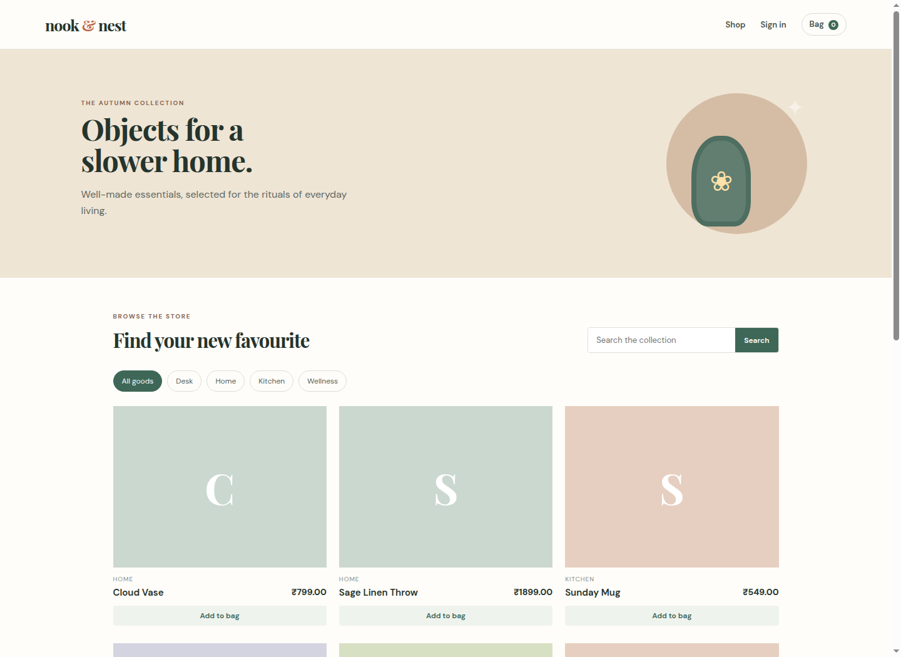
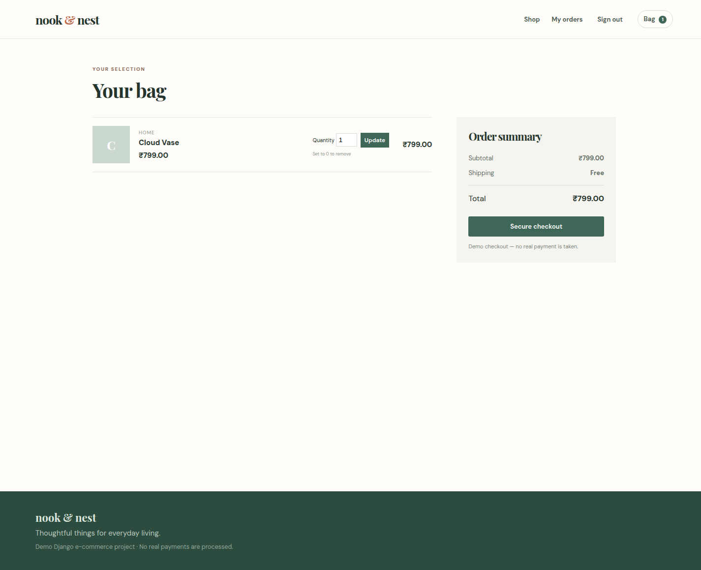
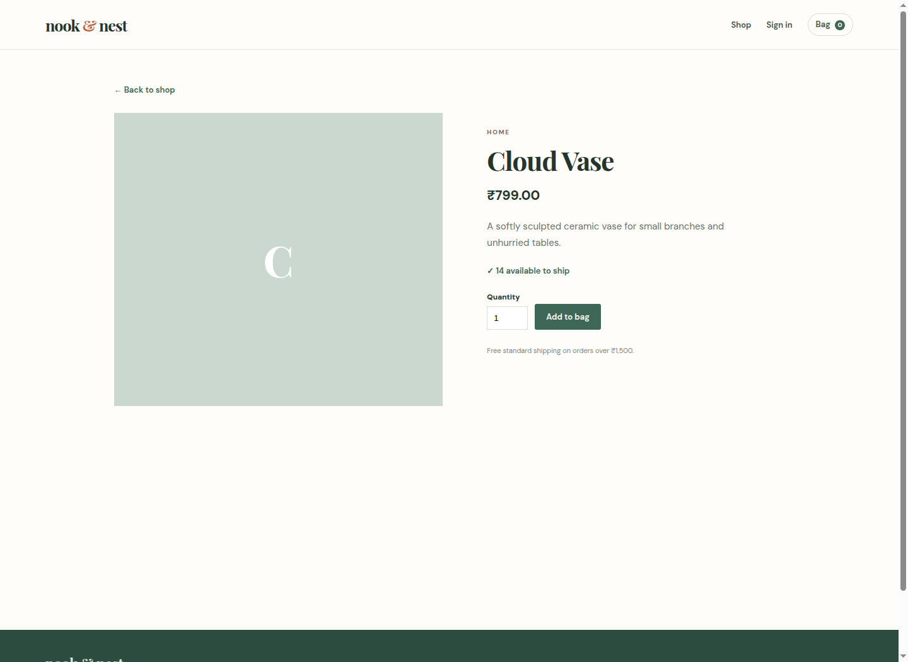
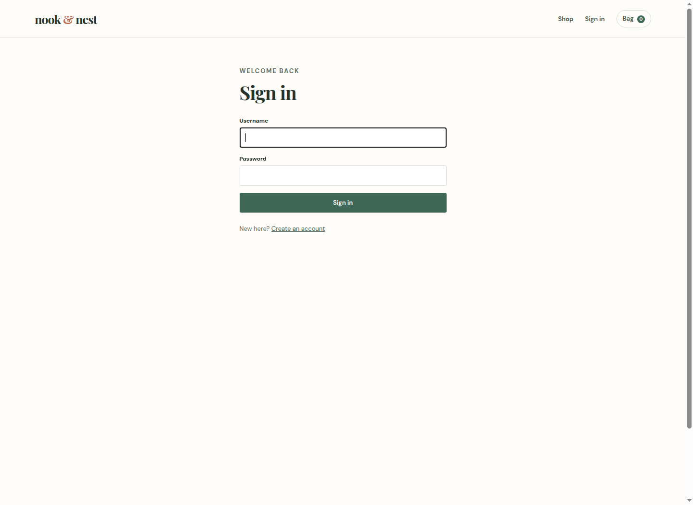

DJANGO E-COMMERCE WEBSITE
A complete Django store with customer accounts and admin management.
Project documentation · September 2026
Nook & Nest is a full e-commerce web application for a curated home-goods store. It lets customers browse products, search and filter the catalog, add items to a session cart, sign in, check out, and view past orders. Administrators manage products, pricing, stock, categories, and order status using Django admin.
| Requirement | Delivered capability |
|---|---|
| Product catalog | Category filters, search, product details, availability. |
| Cart | Session cart, quantities, removal, and calculated totals. |
| Orders | Authenticated checkout, line items, reference, and order history. |
| Authentication | Django registration, sign-in, sign-out, order ownership. |
| Payments | Demo Card workflow with a transaction reference. |
| Admin dashboard | Django admin for products, inventory, orders, and categories. |
| Inventory | Stock display, out-of-stock state, transaction-safe decrement. |
For production, the next steps are: create a Stripe PaymentIntent or Razorpay Order on the server; use the provider's hosted checkout; verify a signed webhook; mark the order paid only after verification; and store all provider secrets in environment variables.
Run with .venv/bin/python manage.py test.
.venv/bin/pip install -r requirements.txt.venv/bin/python manage.py migrate.venv/bin/python manage.py seed_store.venv/bin/python manage.py runserverCreate an administrator with .venv/bin/python manage.py createsuperuser, then open /admin/.




Future features include verified Stripe/Razorpay payments, coupon codes, customer reviews, shipment tracking, staff roles, sales analytics, and REST API access.